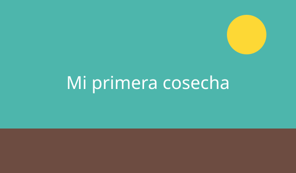

Sobre mí
Soy una apasionada de las plantas que empezó con una maceta de albahaca y hoy comparte todo lo aprendido para que más personas cultiven en casa.
Mi historia
En 2020 armé mi primera huerta en un balcón de dos metros. Entre errores y aciertos descubrí que cualquier espacio con sol puede dar alimentos.

Herramientas que uso a diario
- Pala de mano y rastrillo pequeño.
- Regadera con flor fina.
- Compostera de dos niveles.
- Cuaderno de registro de siembras.